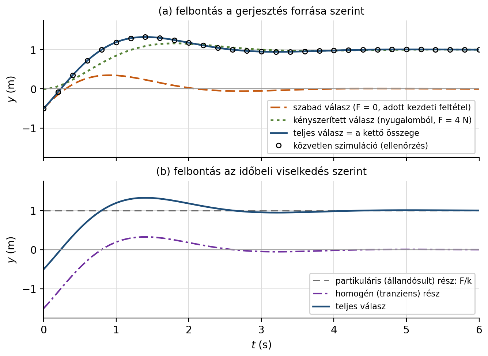

3.2 Lineáris differenciálegyenletek
és a karakterisztikus egyenlet
3.2.1 Motiváció: mit csinál a
rendszer magától?
Húzz ki egy rugón lógó testet, engedd el, és figyeld. Kis
csillapításnál sokáig lengedez, sűrű olajba mártva viszont lassan,
lengés nélkül kúszik vissza. Ugyanez a kérdés jön elő minden
szabályozási körben: ha valami kimozdítja a rendszert az egyensúlyából,
visszatér-e, milyen gyorsan, és közben leng-e? A drón
magassága egy széllökés után, a motor szöge egy új alapjel után ugyanígy
viselkedik.
A válaszhoz nem kell minden egyes esetet leszimulálni. Egy lineáris,
állandó együtthatós differenciálegyenlet (a továbbiakban KDE) esetén egy
algebrai egyenlet néhány gyöke elmondja a lényeget.
Ebben az alfejezetben ezt a karakterisztikus egyenletet
és a megoldás felépítését vesszük át. Aki részletesebb ismétlést
szeretne, a gyűjtemény Kalkulus és analízis könyvének
(dsk-calculus-analysis) a differenciálegyenletekről szóló fejezeteit
forgassa.
Előre jelezzük az alfejezet végeredményét, hogy tudd, mire figyelj: a
gyökök helye a komplex síkon (ugyanaz a kép, mint az
szótárban) megmondja a válasz alakját, a gerjesztés és a kezdeti
feltétel pedig csak azt, hogy az egyes alapmozgások mekkora súllyal
szerepelnek.
3.2.2 Szemlélet: a gyökök
„irányítják” a választ
Vegyünk egy
kg tömeget
N/m merevségű rugón,
viszkózus csillapítással,
külső erővel. Newton törvénye szerint (a részletes modellt a Mechanikai rendszerek: transzláció és rotáció
alfejezet építi fel):
Itt
a test kitérése méterben,
a sebessége,
a gyorsulása; a vessző az idő szerinti deriváltat jelöli. Nyugalomból
indítunk, és a
pillanatban
N állandó erőt kapcsolunk rá. Három csillapítást próbálunk:
,
és
N·s/m.
Tippeld meg: melyik jut el leggyorsabban az új,
m egyensúlyi helyzetbe? Melyik lő túl rajta?
Statikus változat (mint a PDF-ben)
A tömeg–rugó–csillapító gyökei három csillapításnál (balra)
és a hozzájuk tartozó ugrásválaszok (jobbra)
A
eset a leglomhább, a
a leggyorsabb lengés nélküli, a
gyorsan indul, de kb. 16%-kal túllő. A bal oldali ábra mutatja, mi dönt:
a gyökök helye. Most levezetjük, honnan jönnek ezek a számok.
3.2.3 Linearitás, homogén és
inhomogén egyenlet
Definíció. Az
-edrendű,
lineáris, állandó együtthatós KDE alakja
ahol
az
-edik
derivált, az
valós állandók,
a gerjesztés. Ha
,
az egyenlet homogén, különben
inhomogén. A bal oldalt röviden
-nal
jelöljük.
A
művelet lineáris:
,
mert a deriválás is az. Ebből két fontos tény következik:
Szuperpozíció (superposition): ha
az
,
az
gerjesztéshez tartozó megoldás, akkor
az
gerjesztésé.
Az inhomogén egyenlet minden megoldása
alakú, ahol
egy partikuláris (egyetlen, tetszőleges) megoldás,
pedig a homogén egyenlet általános megoldása. Két inhomogén megoldás
különbsége ugyanis megoldja a homogén egyenletet.
Az
-edrendű
egyenlet megoldását
kezdeti feltétel
()
teszi egyértelművé. Másodrendnél a kezdeti hely és sebesség.
3.2.4 A karakterisztikus
egyenlet
A homogén egyenlethez olyan függvény kell, amelynek a deriváltjai
„ugyanolyan alakúak”. A komplex exponenciális éppen ilyen (lásd Komplex számok és a komplex exponenciális):
.
Helyettesítsük be
-t:
Mivel
sosem nulla, az
pontosan akkor megoldás, ha
.
Definíció. A
a karakterisztikus polinom (characteristic polynomial),
a
a karakterisztikus egyenlet. Gyökei a rendszer
karakterisztikus gyökei.
Tétel (a homogén egyenlet általános megoldása).
Minden karakterisztikus gyök egy vagy több módust ad,
és a homogén megoldás a módusok lineáris kombinációja:
egyszeres valós
:
;
egyszeres komplex pár
:
,
ami
alakban is írható;
-szeres
gyök:
(komplex párnál mindkét trigonometrikus taggal).
Összesen pontosan
szabad állandó van, éppen annyi, amennyi a kezdeti feltétel.
Honnan jön a
-vel
szorzott tag? Kettős gyöknél
,
az egyenlet
.
Keressük a megoldást
alakban. Ekkor
és
.
Behelyettesítve minden kiesik, kivéve
-t,
tehát
.
A másodrendű rendszer,
,
gyökei:
A diszkrimináns előjele dönt:
esetén két valós gyök (túlcsillapított, overdamped),
esetén kettős gyök (kritikusan csillapított, critically
damped),
esetén komplex pár (alulcsillapított, underdamped).
Komplex párnál a valós rész
,
a képzetes rész
.
3.2.4.1 Vissza a motorhoz: honnan
jöttek a pólusok?
Az előző alfejezet motorja is ilyen egyenletet követ, csak
harmadrendűt. A motor villamos és mechanikai egyenletéből (levezetése a
Villamos és elektromechanikus rendszerek: a
DC-motor alfejezetben) a szögelfordulásra
adódik. Az arányos pozíciószabályozó
.
Behelyettesítve, és a
-es
tagot a bal oldalra rendezve a könyv motorparamétereivel és
-zel
a karakterisztikus polinom
A gyökei
és
:
pontosan a korábban látott pólusok. Figyeld meg, hogy a visszacsatolás
megváltoztatta a polinomot (a
az utolsó együtthatóba került), tehát a gyököket is. A
szabályozótervezés lényege ez: úgy választjuk
-t,
hogy a zárt kör gyökei jó helyre kerüljenek.
3.2.5 „A pólus dönt”: mikor cseng
le a szabad válasz?
Tétel. A homogén egyenlet minden
megoldása nullához tart
()
pontosan akkor, ha minden karakterisztikus gyök valós része negatív.
Indoklás: minden módus
nagyságrendű. Ha
,
az exponenciális erősebb bármely hatványnál, a tag eltűnik. Ha
valamelyik
,
alkalmas kezdeti feltétellel az a módus korlátlanul nő. Ha
egyszeres gyöknél, a módus tartósan leng vagy állandó; többszörös
gyöknél
hatványai szerint nő.
A lecsengés sebességét a képzetes tengelyhez
legközelebbi gyök határozza meg: a
esetben a gyökök
és
,
a
-es
módus
s időállandóval gyorsan eltűnik, utána a
-es
(
s) uralja a választ.
feltéve, hogy
.
Ha éppen nulla (csillapítatlan rendszert a saját frekvenciáján
gerjesztünk), a lengés amplitúdója
-vel
arányosan nő: ez a rezonancia legélesebb formája.
Például
,
,
esetén
,
így
,
vagyis
:
negyed méter amplitúdó,
késés.
3.2.7 Szabad és kényszerített
válasz, tranziens és állandósult rész
A teljes választ kétféleképpen is felbonthatjuk, és a kettőt nem
szabad összekeverni.
Szabad (zero-input) válasz: gerjesztés nélkül, az
adott kezdeti feltételekből. Kényszerített (zero-state)
válasz: a gerjesztésre, nulla kezdeti feltételekből. A
linearitás miatt a teljes válasz a kettő összege.
Partikuláris + homogén: az ugrásnál
az állandósult érték, a homogén rész a hozzá vezető
tranziens (átmenet). Stabil rendszerben a tranziens
eltűnik, és csak az állandósult (steady-state) rész
marad. A homogén rész állandóit a kezdeti feltétel és a
gerjesztés együtt határozza meg.

Ugyanaz a teljes válasz kétféle felbontásban: szabad +
kényszerített (a), illetve partikuláris + homogén (b)
Az ábrán
m,
m/s,
N,
.
A felső panel a két ok hatását különíti el, az alsó az időbeli
viselkedést.
Miért hasznos a felső felbontás? A szuperpozíció miatt a két hatás
külön-külön méretezhető. Ha a gerjesztést megduplázod, a kényszerített
válasz duplázódik, a szabad válasz nem változik. Ha a kezdeti kitérés
előjele megfordul, a szabad válasz tükröződik. Ez csak lineáris
rendszerre igaz: egy telítődő beavatkozónál (például a drón korlátos
tolóereje) a kétszer nagyobb ugrás válasza már nem kétszer akkora.
3.2.8 Kézi számpélda
Oldjuk meg a rugós rendszert
(,
,
,
nyugalomból) mindhárom csillapításra. A partikuláris megoldás mindig
.
1. Elsőrendű bemelegítés.
,
ugrás
nagysággal,
.
A karakterisztikus egyenlet
,
;
;
,
és
miatt
.
Tehát
– ezt látod az Elsőrendű rendszerek
alfejezetben újra.
2. Túlcsillapított,
.
,
a gyökök
,
.
Általános megoldás:
.
A feltételek:
A másodikból
,
az elsőből
,
azaz
és
:
3. Kritikusan csillapított,
.
;
.
,
tehát
;
,
tehát
:
4. Alulcsillapított,
.
,
.
.
:
.
A deriváltban
:
.
Így
A derivált
,
tehát az első csúcs
-nél,
s-nál van, értéke
m: 16,3% túllövés.
Ellenőrzés: mindhárom képlet
-ban
nullát ad, nulla kezdősebességgel, és
esetén 1-hez tart.
Továbbvitt eredmény. A tömeg–rugó–csillapító
ugrásválasza a gyökök típusától függően
,
(kritikus eset,
),
illetve lecsengő koszinusz;
,
,
esetén 16,3% a túllövés
s-nál. Ezt viszi tovább a Mechanikai rendszerek:
transzláció és rotáció és a Másodrendű
rendszerek alfejezet.
3.2.9 Kód
A gyököket az np.roots adja (együtthatók a legmagasabb
fokútól). A zárt alakú megoldást a controlkit.sim RK4-es
szimulációjával ellenőrizzük (lépésköz 1 ms), a minőségi jellemzőket a
step_info számolja.
import numpy as npfrom controlkit import simm, k =1.0, 4.0t = np.linspace(0, 12, 12001)w = np.sqrt(3)exact = {5: 1-4/3* np.exp(-t) +1/3* np.exp(-4* t),4: 1- (1+2* t) * np.exp(-2* t),2: 1- np.exp(-t) * (np.cos(w * t) + np.sin(w * t) / w)}for b, y in exact.items(): rhs =lambda tt, x, u, b=b: np.array([x[1], (u - b * x[1] - k * x[0]) / m]) X = sim.simulate(rhs, [0.0, 0.0], t, u=4.0) info = sim.step_info(t, y, final=1.0) roots = np.round(np.roots([m, b, k]).astype(complex), 3)print(f"b = {b}: gyökök {roots[0]:.3f}, {roots[1]:.3f}")print(f" Mp = {info.overshoot:4.1f} %, ts = {info.settling_time:.2f} s, "f"max |RK4 - képlet| = {np.max(np.abs(X[:, 0] - y)):.1e}")
b = 5: gyökök -4.000+0.000j, -1.000+0.000j
Mp = 0.0 %, ts = 4.20 s, max |RK4 - képlet| = 2.6e-13
b = 4: gyökök -2.000+0.000j, -2.000+0.000j
Mp = 0.0 %, ts = 2.92 s, max |RK4 - képlet| = 1.5e-13
b = 2: gyökök -1.000+1.732j, -1.000-1.732j
Mp = 16.3 %, ts = 4.04 s, max |RK4 - képlet| = 1.0e-13
A beállási idő
(,
2%-os sáv) a kritikusan csillapított esetben a legrövidebb a három
közül. (Az 5. feladat megmutatja, hogy egy kicsit alulcsillapított
rendszer ennél is gyorsabb lehet.)
A motor zárt körének gyökeit ugyanígy kapjuk, a
controlkit.models paramétereiből felépítve a polinomot:
Y = 0.000-0.250j, |Y| = 0.250 m
eltérés 15 s után: 1.0e-07 m
A gerjesztés a rhs-ben időfüggő kifejezésként szerepel,
ezért az RK4 a köztes pontokban is a pontos értékét látja. A maradék
eltérés nem numerikus hiba, hanem a
m kezdeti kitérésből indult,
szerint haló tranziens.
3.2.10 Próbáld ki
Gyökök egyesülése (interaktív ábra): kezdd a
„túlcsillapított” gombbal, kapcsold be az „erőugrás” jelölőt, a kezdeti
kitérést állítsd 0-ra, és csökkentsd
-t
5-ről 4-re, majd 2-re. A két valós gyök egymás felé halad,
-nél
összeér, utána függőlegesen szétválik; ekkor jelenik meg a túllövés (az
állapotsorban max
m a
-nél).
Merevség:
mellett növeld
-t
4-ről 16-ra. A gyökök valós része
marad (a burkoló nem változik), a képzetes rész
-ról
-re
nő: sűrűbb lengés, ugyanolyan gyors lecsengés.
Határeset és instabilitás: a „csillapítatlan”
gombnál a gyökök a képzetes tengelyen vannak, a lengés nem fogy. A
„negatív b” gombbal (energiát betápláló „csillapítás”) a gyökök a jobb
félsíkra kerülnek, a lengés nő.
Módusok: a „túlcsillapított” esetben, kitéréssel
indulva, kapcsold be az összetevőket. A narancs (lassú) görbére rövid
idő után rásimul a teljes válasz.
3.2.11 Tipikus hibák
Tünet: a homogén megoldás állandóit a partikuláris
rész figyelembevétele előtt számolod ki, és a kezdeti feltétel nem
teljesül. Ok:
-ket
a teljes
megoldásra kell illeszteni. Javítás: előbb
,
utána a feltételek a teljes összegre.
Tünet: kettős gyöknél
,
és két feltételt nem lehet teljesíteni. Ok: a két tag
ugyanaz. Javítás:
.
Tünet: „a kényszerített válasz az állandósult
rész”. Ok: a két felbontás összekeverése; a nulla
kezdeti feltételű válaszban is van tranziens. Javítás:
szabad/kényszerített = ok szerint, tranziens/állandósult = időbeli
viselkedés szerint.
Tünet: a csupa pozitív együtthatós, ezért „biztosan
stabilnak” ítélt harmadrendű rendszer növekvő lengést mutat.
Ok: pozitív együtthatók harmad- és magasabb rendnél nem
elegendőek. Javítás: számold ki a gyököket (vagy a Routh–Hurwitz-kritérium eszközét).
Tünet: komplex gyököknél komplex értékű „megoldás”.
Ok: a konjugált pár egyik tagja elveszett.
Javítás: az
valós alakot használd.
3.2.12 Önellenőrzés
Miért pont exponenciális függvényt próbálunk a homogén
egyenletre?
Az
gyökeiből mit mondhatsz a válaszról?
Egy rendszer karakterisztikus gyökei
,
és
.
Melyik határozza meg, mennyi ideig tart a beállás?
Mekkora az
egyenlet állandósult értéke?
Megváltozik-e a gyökök helye, ha nagyobb erővel gerjesztjük a
lineáris rendszert?
3.2.13 Feladatok
(A) Old meg:
,
.
(A) Old meg:
,
,
.
Leng-e a megoldás?
(B) Old meg:
,
.
(B) Old meg:
,
.
Nevezd meg a tranziens és az állandósult részt.
(C, programozás) Egy
kg,
N/m rendszert
m kitérésből engedünk el. (a) Mekkora
-nél
kritikusan csillapított? (b) Keresd meg szimulációval azt a
értéket, amelynél a kitérés a leghamarabb marad tartósan a
m sávban. Magyarázd meg az eredményt.
(C) Bizonyítsd be, hogy az
rugós rendszer szabad válasza mindig lecseng. (Útmutatás: vizsgáld a
gyököket valós és komplex esetben.)
3.2.14 Rövid összefoglaló
A lineáris, állandó együtthatós KDE megoldása partikuláris és homogén
rész összege; a homogén rész a
karakterisztikus egyenlet gyökeihez tartozó módusokból áll:
,
többszörös gyöknél
-hatványokkal,
komplex párnál lecsengő vagy növekvő lengés. Ugrásra
,
szinuszra a fazor
.
A teljes válasz szabad és kényszerített válaszra is bontható.
Továbbvitt eredmények: a szabad válasz pontosan akkor
cseng le, ha minden gyök valós része negatív („a pólus dönt”); a
tömeg–rugó–csillapító
és
viszonya szerint túl-, kritikusan vagy alulcsillapított,
,
,
esetén 16,3% túllövéssel.
3.2.15 Megoldások
3.2.15.1 Válaszok az önellenőrző
kérdésekre
Mert deriváláskor csak egy
szorzó jön ki, így a differenciálegyenletből algebrai egyenlet
lesz.
A gyökök
:
stabil, lengő,
s időállandójú burkolóval,
s periódussal.
A
(10 s időállandó), mert a képzetes tengelyhez legközelebbi.
(a rendszer stabil, a gyökök
és
).
Nem: a gyökök a rendszer tulajdonságai; a gerjesztés a módusok
együtthatóit és a partikuláris részt változtatja meg.
3.2.15.2 A feladatok
megoldásai
,
,
,
miatt
.
;
,
,
így
,
:
.
Nem leng (valós gyökök), monoton tart nullához.
Kettős gyök
,
:
.
,
:
.
,
,
tehát
.
,
:
.
A tranziens a
tag, az állandósult rész a lengő
.
N·s/m. (b):
def ts_free(b): rhs =lambda tt, x, u: np.array([x[1], (-b * x[1] -50* x[0]) /2]) t = np.linspace(0, 3, 3001) y = sim.simulate(rhs, [1.0, 0.0], t)[:, 0]return sim.step_info(t, y, y0=1.0, final=0.0).settling_time, y.min()bs = np.linspace(10, 22, 121)best =min(bs, key=lambda b: ts_free(b)[0])for b in (best, 20.0): ts, ymin = ts_free(b)print(f"b = {b:.2f}: ts = {ts:.3f} s, legkisebb y = {ymin:.4f} m")
b = 15.60: ts = 0.721 s, legkisebb y = -0.0199 m
b = 20.00: ts = 1.167 s, legkisebb y = 0.0000 m
A leggyorsabb
:
a válasz éppen csak annyit lő túl (2% alatt), hogy a sávon belül
maradjon, és hamarabb ér oda, mint a kritikusan csillapított. A
„kritikus a leggyorsabb” állítás a túllövés nélküli válaszokra igaz.
Valós gyökök esetén
;
mivel
,
a négyzetgyök kisebb
-nél,
így mindkét gyök negatív. Komplex vagy kettős gyöknél a valós rész
.
Mindkét esetben a tétel szerint a válasz lecseng.